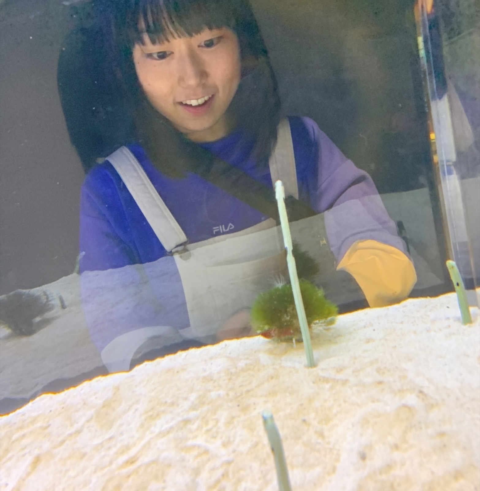
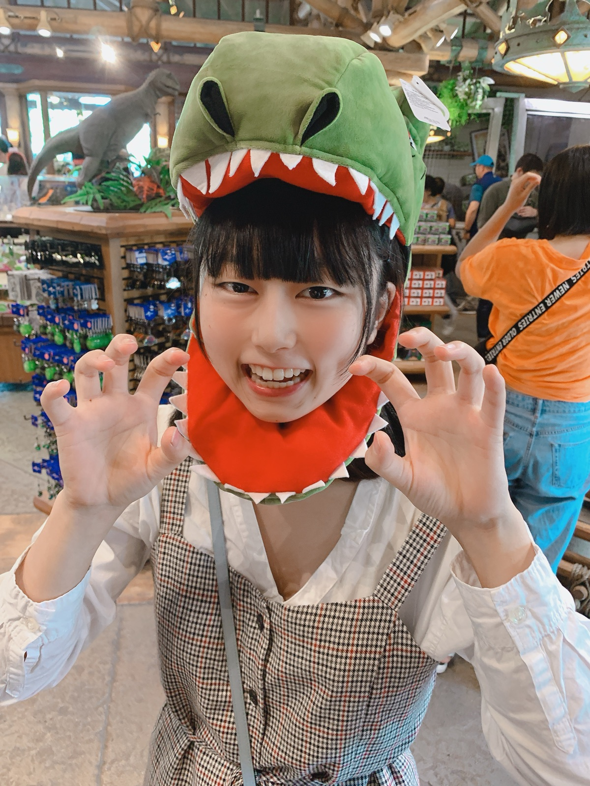
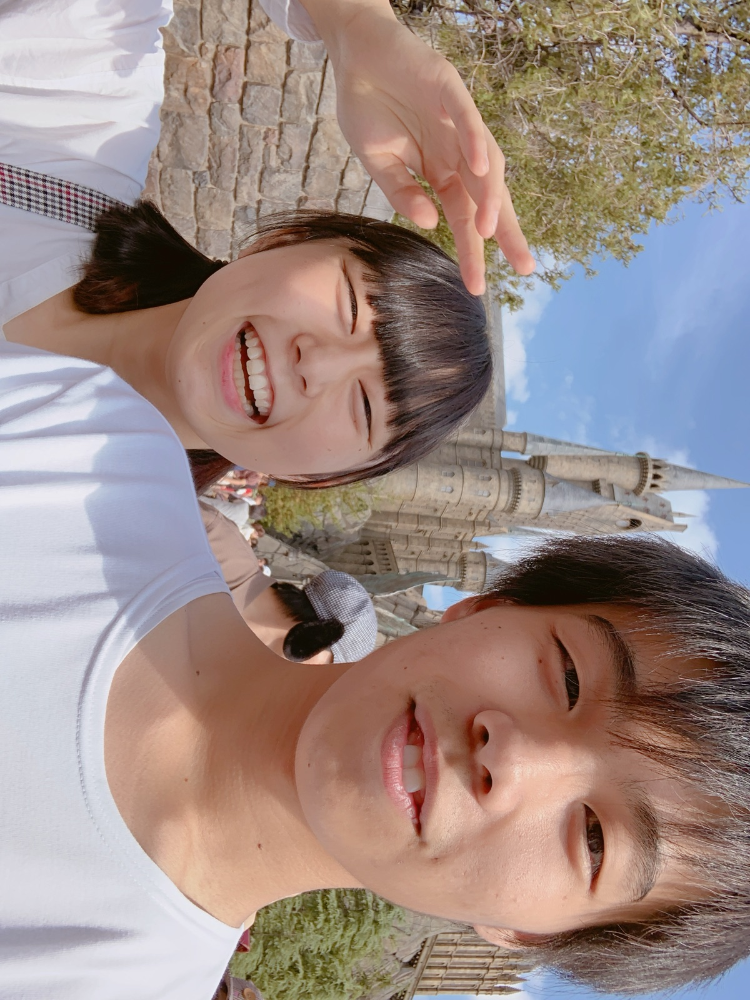
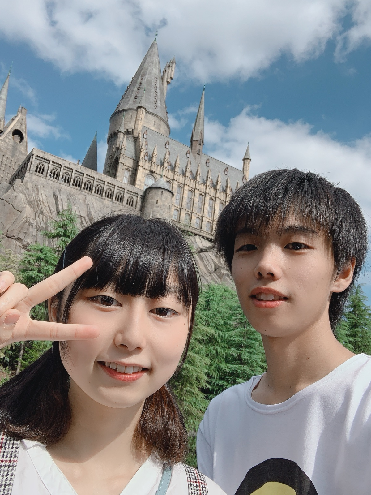
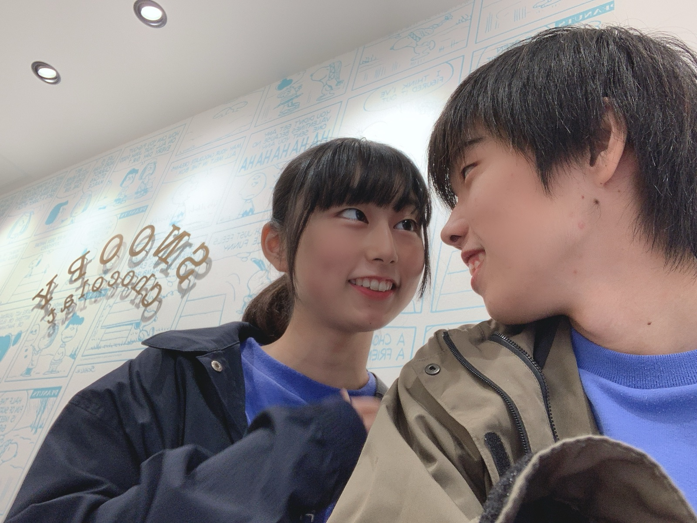
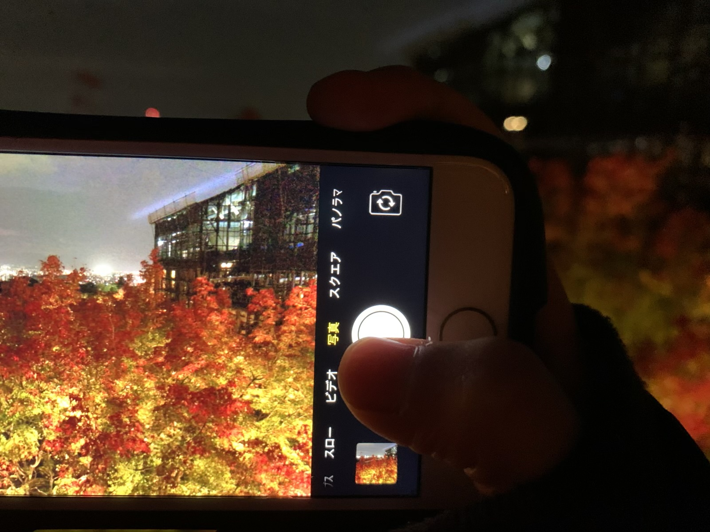
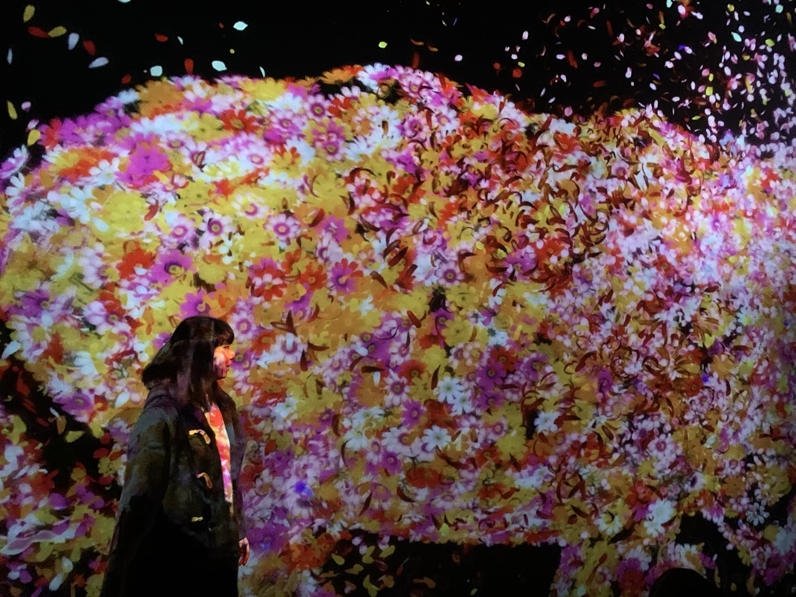
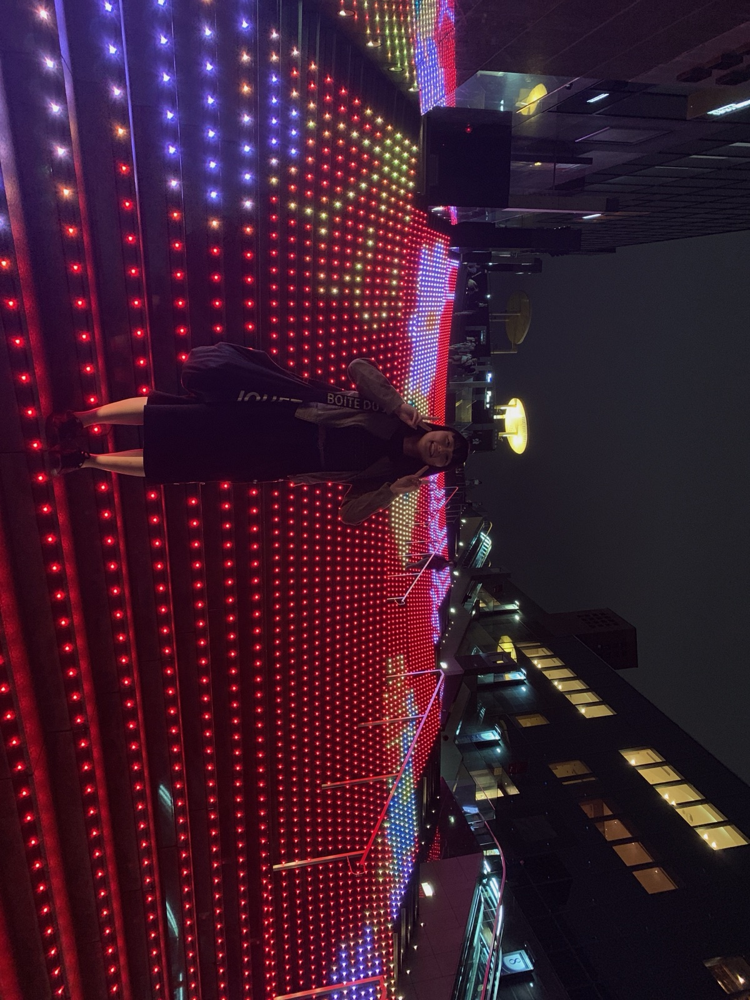

2019.03Graduation
高校卒業
高校卒業。大学生スタート。
おれが大学で京都に行ったから、付き合ってまだ１年ちょっとなのに遠距離で色々不安だったよね。
申し訳なかったです。ごめんなさい。
彩乃がいっぱい京都に遊びに来てくれたりして、彩乃のおかげで楽しく過ごせました。ありがとう。
2019.04.28First Kyoto
初めての京都デート
これは彩乃が初めて京都の家に遊びにきた時だと思う！
初めてのお泊まり。
京都水族館行って、チンアナゴを見る彩乃。
おうちのベッドで拗ねる？彩乃。

2019.10.05Universal Studios Japan
ユニバ！！
京都に住んるけど、京都観光よりユニバデートが多かったね。笑
ユニバ行き過ぎてユニバマスターだもんね！笑
ハリーポッターエリアの写真。いい笑顔、いい髪型！！
恐竜あーちゃん！食べられちゃうぞー！



2019.11.162nd Anniversary
２年記念日！
２年記念日の旅行！って言っても京都だけど。笑
五重塔のところの坂（産寧坂？）らへんを散歩したり、
抹茶チーズケーキ食べたり、縁結びの神社行ったり！
清水寺（工事中）も行って、綺麗な紅葉ライトアップ見れたね！


おまけPictures
おまけの写真
クリスマスユニバ！！
髪の毛が青い彩乃。
この年は、遠距離１年目で、京都だったこともあって、
ユニバメインの年だった！
おまけ２Pictures
おまけの写真２
これは名古屋のチームラボ。 これはいつぞやの京都駅

